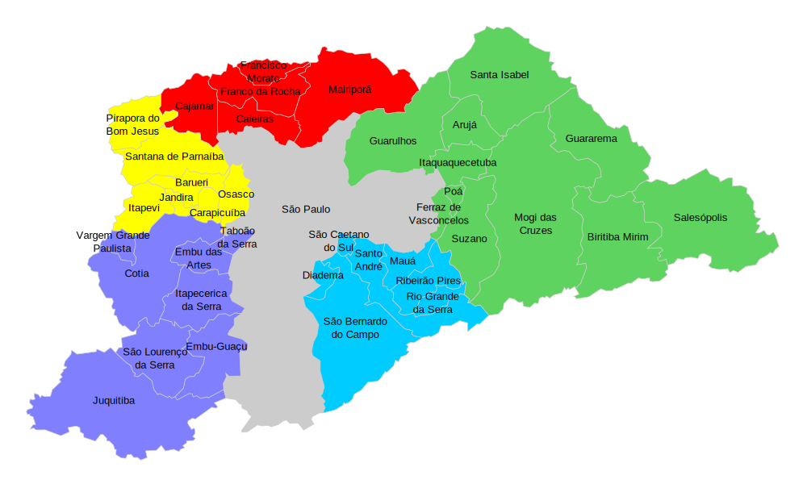

Sobre
Olá! Me chamo Sergio Martins Neves, tenho mais de 35 anos de experiência em manutenção elétrica e mecânica voltadas para a indústria, ingressei no mercado como eletricista e me aprimorei com o passar dos anos, ganhando experiência com as mais diversas atividades voltadas para manutenção, reforma e adaptação industriais.
Abri a SMN Eletrotécnica com o intuito de prestar serviços de forma terceirizada para empresas que precisem de suas máquinas prontas para o uso, sem defeitos ou reformadas
Atualmente exerço principalmente a função de mecânico industrial. Conserto e reformo tornos mecânicos, fresas, furadeiras radiais, retificas, pórticos e diversas outras máquinas, independente da marca ou ano de fabricação.
Atendimento
Presto atendimento na capital de São Paulo, mas tenho um foco maior na região sudoeste, contemplando os municípios de Embu das Artes, Taboão da Serra, Cotia e região.
Atuo de segunda-feira a sábado, seguindo os horários funcionais da empresa na qual estou prestando serviço.